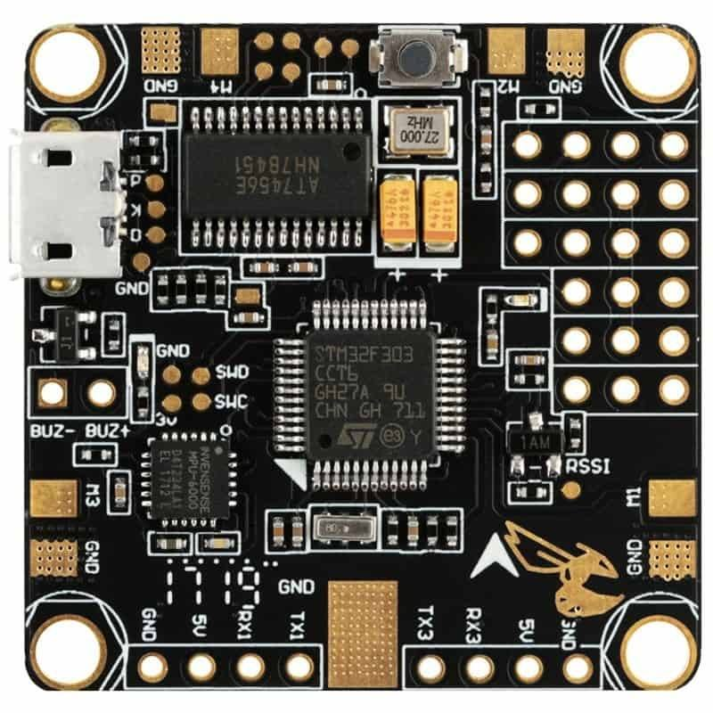
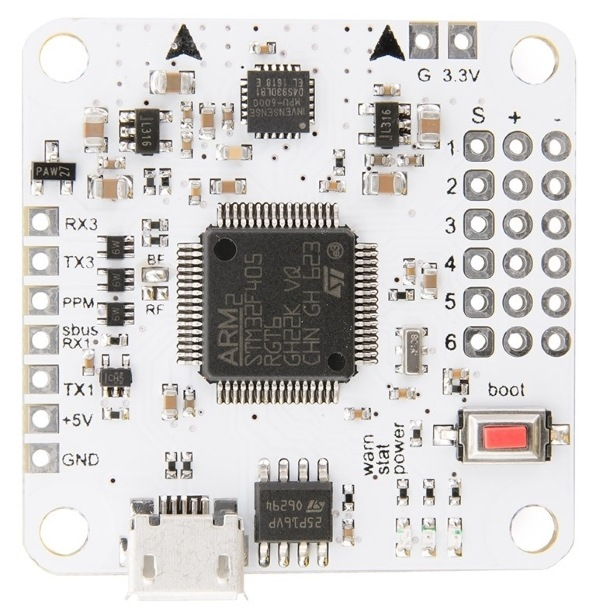

The purpose of your quadcopter propellers is to generate thrust and torque to keep your drone flying, and to maneuver. The upward thrust force generated by the propellers is usually measured in pounds or grams. To keep your
drone flying at a hover, the upward thrust needs to equal the weight of your drone. The thrust to weight ratio TWR (thrust divided by weight), indicates how much thrust your drone generates relative to its weight. A good
rule of thumb is to design the TWR to be at least a value of two.
Typically, quadcopter propellers produce more thrust the faster they spin. They are also influenced by the flight dynamics of your quadcopter. Some propellers
produce much more thrust when the drone is stationary, as opposed to when it is flying. Other props perform much better at higher speeds.
Torque is generated when the propellers accelerate up or down. This force is responsible for the ability of the drone to
rotate on the yaw axis.
Torque is an effect of Newton’s third law, where every action has an equal and opposite reaction.
As the propeller rotates, and pushes through the air, the air pushes back and causes a counter rotation on the body of the drone. This is why all of the propellers on a multirotor drone do NOT rotate in the same direction
(see Figure 1). The counter rotation effect of all propellers cancels out, and you have no rotation. By changing the relative RPMs of the motors, you can cause a yaw rotation of the drone.
Your drone has two different
types of propellers and motors. One set is designed to spin clockwise, while the other is designed to spin counter clockwise. Be sure to identify which ones are which.
There are a number of factors that should be taken into consideration when choosing the right drone propeller blades. Drone propeller blades have a significant influence on power and can affect how smoothly a drone flies. Therefore,
one of the most important considerations is flight efficiency – how will new drone propeller blades improve the flight efficiency of your multirotor UAV? When selecting new drone propeller blades, the following factors
are important:
Number & Size of Blades:- The number of blades required per propeller will vary depending on the platform, usage and payload requirements. Smaller blades, under eight inches, are most frequently used for racing drones
and those used for acrobatics. Smaller blades are generally paired with smaller motors with high kV ratings. Larger blades, over eight inches, are paired with motors that have low kV ratings and can be used to carry heavier
payloads, such as video equipment or spraying containers for agriculture.
Pitch:- Pitch is defined as the traveling distance per a single revolution of the propeller. The correct pitch will often depend on the specific application for a UAV platform. Lower pitch often results in more torque
and less turbulence for lifting, and as a result the motors do not have to work as hard to carry heavy payloads which can result in increased flight time (as the motors will draw less current from the battery). Propellers
with higher pitches move more air, but generally create more turbulence and less torque.
Diameter:- Typically, a larger diameter propeller blade allows greater contact with the air. This relates directly to flight efficiency, as a small increase or decrease in diameter can change how efficiently a drone
performs. Larger propellers tend to be more stable when hovering than smaller propellers. However, smaller propeller blades require less effort to speed up or slow down than larger ones, making them more responsive than
larger propellers. Smaller propellers with a high pitch are better suited for fast and quick maneuvers, while larger propellers with low pitches are more appropriate for carrying heavier payloads and aerial video cameras.
Other factors to be considered include:- Blade material Power
RPM
Air density Maximum noise In summary, selecting the most appropriate propeller blades for a VTOL UAV will vary depending on the planned usage and there are a number of factors that need to be taken into consideration.
The quadcopter propeller pitch is a measurement of how far that a propeller will move through the air for every single rotation of the motor/propeller. This is only a theoretical approximation since real world factors such as prop
material, air density, and efficiency can influence this distance. However, the pitch is a good measurement that will help you better understand your propeller performance. The higher the pitch value, the faster your plane
will go. To better understand the effect of propeller pitch, imagine two wood screws as shown in Figure 2. The screw on the left has a coarse thread (higher pitch), and the screw on the right has a finer thread (lower pitch).
If you were to take a screwdriver, and screwed both into a piece of wood by making sure you turn the screwdriver at the same speed for both screws, you would notice that the screw with the coarser thread (higher pitch), would
sink into the wood more.
This is the same effect as a propeller cutting through the air. In the figure, the two arrow lines show the position of the propeller tips. You can see that the high pitch propeller covers
the same distance travelled with only half the rotation of the propeller. With both motors/propellers spinning at the same RPM, the higher pitch propeller will travel further in the same amount of time. In other words, the
plane with the higher pitch propeller will fly faster. Changing the propeller pitch will also change the dynamic response of your quadcopter.
To produce the required thrust, a quadcopter propeller needs to be designed
to be within a specific range of pitch angles. An almost flat propeller will be just as bad as a steep pitched propeller, that is it will not generate any lift. The flatter the blade, the easier it is for the motor to rotate
the blade through the air. Toy grade or low-end quadcopters are equipped with low power motors. These motors need to spin faster to create lift, but higher RPMs are easier to generate with a smaller motor than torque.
Two bladed propellers are more efficient at producing thrust as opposed to three or four bladed propellers (see Figure 5) so long as the tips do not reach supersonic speeds. For the purposes of quadcopter propellers, this is not
a problem. Adding blades increases the amount of thrust that is generated, but at the cost of efficiency. You will see many drones that have 5-inch triple blade propellers. The aerodynamic environment of drones negates
the inefficiencies of tri-blades in the 5-inch size. Tri blades also have a higher torque generation which makes the yaw axis of the quadcopter much more responsive. There are 4, 5, and even 6 blade designs, but these have
diminishing returns due to inefficiency.
Propellers are usually made from a plastic compound, though carbon fiber propellers are also available. The type of material used to make the quadcopter propeller affect its stiffness and durability. Most hobby drone pilots
are using durable plastic propellers that are slightly flexible and bend when your drone crashes. This allows them to last much longer, and save you money in the long run. These propellers have a disadvantage of causing vibration
as they rotate, which can affect the flight performance of your drone. Carbon fiber propellers have a number of advantages, and disadvantages. They produce less vibration due to their stiffness, and sound quieter when flying.
They are much lighter, and are stronger than plastic propellers. However, they are expensive, and the inflexibility means the motor bearings will take the brunt of the impact force on crashes.
For better flight performance, you want to go with lighter propellers as opposed to heavier ones. Lighter props have less moment of inertia, which means the motor needs to apply less torque to generate the same RPM. This also results
in faster RPM changes which leads to better drone flight response. The weight distribution greatly affects the amount of vibration that the propeller will generate. A perfectly balanced prop will produce next to no vibration,
while an unbalanced prop will affect the flight performance, and will sound terrible.
The more surface area that a propeller has, the more air it can push thereby creating more thrust. The downside is higher current draw, increased drag, and reduced power efficiency. Bull nose propellers are more commonly being
used on modern quadcopters (see Figure 6). Bull-nose quadcopter propellers have a greater surface area, and create more thrust. Tapered propellers create less tip vortices, but sacrifices thrust as the propeller gets thinner.
These are better suited for slow moving quadcopters where stability is more important for applications such as aerial photography. The added surface area of the bull-nose propeller means that you are adding weight, especially
further away from the hub. This increases the moment of inertia of the propeller, and requires the motor to apply more torque, drawing more power from the battery. Bull-nose propellers are commonly used on small racing
frames to gain a higher thrust at a smaller size.
When selecting propeller sizing you need to understand the format that manufacturers use. There are two common formats that are used: LxPxB or LLPPxB. L represents the length, P is the pitch, and B is the number of blades.
You may also see a BN designation that stands for bull-nose. You may also see an R or a C after the sizing numbers. The R stands for reversed, which is the rotation direction of the propeller. An R propeller needs to be
mounted on a drone motor that rotates clockwise. A propeller with a C designation is to be mounted on a motor that rotates counter-clockwise.
There are many drones that are designed to highly portable so you can easily take them anywhere with you. At the high RPMs needed to generate lift to fly your drone, the outward force due to the motor rotation is sufficient
to keep the propeller in its proper position. So, when you take off and jam the throttle on high, you can be sure your drone will fly. The foldable propellers are designed to maintain balance, so you do not lose any thrust
generation efficiency.
There is a slight advantage that a foldable propeller has that a fixed prop doesn’t. On a fixed prop, when you push the throttle to high, all the motor torque is transferred to the propellers. With a foldable propeller, there is a bit of an absorbing
effect that helps to cushion the impact on your drone. This will quickly balance out and the full torque will be applied to the propeller. The cushioning effect is beneficial to reduce shock impact on the camera.
If your quadcopter has crashed, be sure to take a careful look at the propellers for any damage. A few scrapes on the propeller are ok, but flying with nicked propellers will make it nosier, and increase vibration. This will have
the effect of shortening the life of the motors, since the bearings will rotate as if they are unbalanced. The quickest way to check for any damage is to run your fingers along the leading edge of the propeller. If you
feel any major nicks, then it’s time to replace the propeller. Be sure to keep a few extra propellers on hand if they need to be replaced. Most quadcopters that you buy come with extra propellers. Remember, that there
are two different directions that the propeller can rotate (see previous section). Be sure that you are mounting the correct propeller on the right motor.
To know how much thrust a given propeller will produce, you must examine motor thrust test data which most manufacturers provide. The same propeller on two different motors can have vastly different performance due to variances
in design, torque, power, and RPM. However, these bench tests are done in a static environment, and do not reflect the actual environment when your quadcopter is flying. Typically, you can expect to see 5 to 10% less thrust
in real flight as compared to the bench tests. Be sure to take this into account when you are sizing your propeller and drone motor.
Standard Propellers: The propellers are usually located at the front of the drone/quadcopter. There are very many variations in terms of size and material used in the manufacture of propellers. Most of them are made of plastic
especially for the smaller drones but the more expensive ones are made of carbon fiber. Propellers are still being developed and technological research is still ongoing to create more efficient propellers for both small
and big drones. Propellers are responsible for the direction and motion of the drone. It is therefore important to ensure that each of the propellers is in good condition before taking your drone out for flight. A faulty
propeller means impaired flight for the drone and hence an accident. You can also carry an extra set of propellers just in case you notice some damage that was not there before.
Pusher Propellers: Pusher propellers
are the ones responsible for the forward and backward thrust of the drone during flight. As the name suggest, the pusher propellers will determine the direction the drone takes either forward or backward. They are normally
located at the back of the drone. They work by cancelling out the motor torques of the drone during stationary flight leading to forward or backward thrust. Just like the standard propellers, the pusher propellers can
also be made of plastic or carbon fiber depending on the quality. The more expensive ones are usually made of carbon fiber. There are different sizes depending on the size of the drone. Some drones provide for pusher prop
guards that will help protect your propellers in the event of an unplanned crash. Always ensure you inspect your pusher propellers before flight as this will determine the efficiency pf the flight.
Let’s talk fancy for a moment, let’s talk variable pitch propellers. Fairly uncommon for this level of flying machine, it may have occurred to you earlier that finding a balance has its limitations. Like a swimmer in the water,
there are times to push hard and there are times to float along. On an airplane, the wings have flaps. Extend these flaps to create both more surface area and a greater angle of attack to drastically change how the aircraft
performs, i.e. it can maintain flight at much lower speeds. A helicopter, on the other hand, will not have flaps on its propellers, instead it twists the blades, changing the angle of attack only.
This can be true
of your drone propellers as well. We do not know of a retail solution as yet, but we’ve seen this technique in some prototype commercial drones. The idea, mostly, is to utilize the best angle to use the least amount of battery
possible at any stage of flight, all without compromising performance. Imagine, if you will, if you could change the overall size, texture and pressure of the tires on your car, all while you are driving. That is as close
to the same concept as I can think of right now. Hard smooth tires would provide the best fuel efficiency on the highway, but the worst amount of suspension and grip. Big soft tires with lugs for tread would ease your passage
over large rocks or bad pot holes, but would be horrid for fuel costs on the highway. We find the balance on our cars as we find the balance in our drone propellers.
For the most part, drone propellers consist of two blades. You’ve seen this on airplanes as well, smaller craft usually have two bladed propellers, larger craft may have three or four blades. For our purposes, we’d like to make
blade count a sub-category of the surface area discussion – more blades produces more surface area per rotation, after all.
Have you ever stirred water in a pot or bucket? As you get the water moving faster and faster
around in a circle it becomes harder to make an impact on the fluid. Let’s think of splashing of the water as if it were smooth flight. When the water is sitting still or moving slowly, you dip your hand in and move the water
– it is at this point that your action has the most impact and creates the most splash. If you put two hands in, on opposite sides, notice how the rotation creates less splash? Then, as I say, if you are just getting started,
things splash a lot, but once moving around quickly, you reach the point where you have minimal impact on the water, you’re just moving your hands to keep up with the flow.
Brushless And Brushed Motor
×
Brushless Motors
Understanding the specifications of drone motors and how they work is important for any hobbyist. There may come a time when you will want to replace a burned-out motor, upgrade your existing drone motors, or even build a drone. This
article serves to help you understand the basics of drone motors so you can pick the best drone motor that meets your requirements and budget. If you google drone motors, you will come across many articles on this topic.
However, I find that most of these simply gloss over the explanation, and only provide a surface level explanation. Hopefully, you will find this article much more informative.
There are two parameters that determine the drone motor size for your quadcopter: 1. Your quadcopter total weight 2. Your quadcopter frame size If you are building your drone, you may not know the final weight. However,
you can determine the final weight by considering the weight of all of the individual components. The aggregate weight of your quadcopter can be your best guess, as you haven’t constructed it yet. It should include everything:
frame, flight controller, PDB, wires, motors, battery, payload (for example, HD camera and gimbals), and so on.
The frame size will let you determine the proper propeller size to use. Once you know the propeller size and the weight of the drone, you can determine how much thrust the individual drone motor needs to generate to
get your quadcopter into the air.
The thrust to weight ratio TWR = T / W is the main dynamic characteristic that will determine your drone flight profile. To maintain steady flight, your TWR needs to be equal to one (see Figure 1). However, to take off
you will need TWR > 1 so you have a net acceleration upwards. When flying, the angle of attack of the drone (ie the tilt angle alpha in Figure 2) causes the thrust vector to have vertical and horizontal components. This
requires the TWR to be at least 1.3 for an approximate maximum angle of attack of 40 degrees. A general rule is that the motors should be able to provide twice as much thrust as the total weight of the quad. If the thrust
provided by the motors is too little, the quad will not react well to your control and may even experience issues on takeoff. For instance on the off chance we had a quadcopter that weighs 1kg, the aggregate thrust created
by the motors at 100% throttle should be no less than 2kg, or 500g for each motor (which is multiplied by 4 for a quadcopter). This will give you better control, as well as the space for including additional payload later
on (like heavier cameras, or possibly additional batteries to extend flight time).
The size of brushless motors are normally indicated by a 4-digit number of the pattern XXYY. The XX represents the motor stator width, while the YY represents the motor stator height. Both dimensions are in millimeters. A taller
stator provides more power at higher RPM, while a wider stator provides more torque at lower RPM. Also, a larger stator height means a bigger permanent magnet size (see Figure 6), while an increased stator width means a
larger electromagnetic coil size. The size of the prop shaft on the motor determines the size of the propeller that can be used. Motors with a M5 (5mm diameter) motor shaft are designed to be used with 3”, 4” 5”, and 6”
propellers.
The kV motor specification is the number of revolutions per minute that the motor will turn when one volt is applied with no load on the motor. When you attach a propeller, you will get a reduction in the number of RPMs
due to added inertia of the propeller, and air resistance. Higher kV motors will spin the propeller faster, but lower kV motors will generate higher torque. This is why larger propellers are paired with low kV motors, in
order to provide the increased torque needed to turn the propellers. High kV motors are used for smaller, and lighter propellers. 2204 and 2205 are common motors that are used on quadcopters. A good propeller matching for
thee motors are: 2600 kV and higher motors for 4” propellers 2300-2600 kV for 5” propellers 2300 kV and lower for 6” propellers
KV is another essential parameter. It is the theoretical increase of motor rpm (rotation per minute) when the voltage goes up by 1 volt without load. For instance, while running a 2300KV motors with a 3S LiPo battery (12.6V), the motor would turn at around
28980 rpm. (2300 x 12.6V = 28980) This is only an estimation. In any case, once you mounted a propeller on the motor, the rpm won’t be that high because of the props resistance. Higher KV motors
would turn the propeller quicker with less torque, and lower KV motors create higher torque with less rotation. Bigger props are matched with low KV motors, and smaller props with high KV motors. It’s important to discover
a balance between rpm and torque when picking motor and propeller. By matching high KV motors with excessively large propellers, the motors will try to turn them quickly like it would do with smaller props, and this will
draw a lot of current and produced an excessive amount of heat.
Electric motor efficiency is the ratio between the mechanical power output and electrical power input. The mechanical power output is determined based on the torque and speed required and the electrical power is determined by the
voltage and current supplied to the motor. However, the motor efficiency is not constant over the entire thrust profile. Some drone motors may be efficient at a lower throttle, but start losing efficiency at higher currents
as it approaches its maximum limit. You will be wasting battery energy and drone flight time with less efficient motors. To get a higher thrust, the motor will need to draw more current. The best combination for a drone
motor is high thrust with low current draw. Inefficient motors generate too little thrust, or use too much current. Typical drone motor efficiencies have a value of 7.
The maximum thrust of a given torque motor and propeller combination is achieved when the motor has reached maximum RPM. However, the torque of a motor determines how quickly the motor can vary the speed of the propeller. For example,
how fast can the motor rotate the propeller from zero to maximum rpm? The effect of the motor torque will be noticed when you start flying your drone. If the drone motor torque is too low, the quadcopter can feel sluggish,
and slow to respond to commands. You need to strike a good balance between motor rpm and torque when matching a drone motor with a propeller.
You may infrequently observe something like “12N14P”. The number before the letter N refers to the quantity of electromagnets in the stator, and the number before P refers to the quantity of perpetual magnets in the motor. Most motors have the same 12N14P arrangement, however, some lower KV motors have more electromagnets and lasting magnets to expand torque and be more productive (and would be more costly). Frame Size = Prop Size = Motor
Size and KV For the vast majority of the circumstances, knowing frame size allows us to estimate what kind of motor we should use. This is on the grounds that the frame size limits props size, and prop measurement limits
the motor size and KV. This table below gives you a few thoughts and is based on using a 4S LiPo battery. Frame size is referring to wheelbase (otherwise known as motor to motor distance). Frame Size-----------Prop
Size-----------Motor Size-----------KV 150mm or smaller-----------3″ or smaller-----------1306 or smaller-----------3000KV or higher 180mm-----------4″-----------1806-----------2600KV
210mm-----------5″-----------2204-2206-----------2300KV-2600KV
250mm-----------6″-----------2204-2208-----------2000KV-2300KV
350mm-----------7″-----------2208-----------1600KV
450mm-----------8″, 9″, 10″-----------2212 or larger-----------1000KV or lower
Specifications:
Dimension: 8mm (Diameter) x 23mm (Length) Voltage: 3.2V kV: 13000+ Terminal Resistance: 0.63ohm No Load rpm: 37850 No Load Current: 130mA Constant Torque: 0.79mNm/A Weight of motor: 6.2g
Solid/Hollow shaft Type of Magnets (N52, N54) Arc Magnets Smaller air gaps Soldering tabs on motor Speed control integration Cooling design
Brushed:- A “brushed” DC motor has a rotating armature (a set of wound wire coils) which acts as an electromagnet with two poles. A rotary switch called a commutator reverses the direction of the electric current twice every
cycle, to flow through the armature so that the poles of the electromagnet push and pull against the permanent magnets on the outside of the motor. Brushless:-
A “brushless” DC motor does not use brushes. It uses a permanent magnet and accomplishes the switching by electronically switching the polarity. In order to accomplish this in a controlled manner, a speed feedback mechanism
and an electronic controller are required. The controller can be mounted on the motor or may be a separate item.
The landing gear adds an extra protection to your flying platform and all other precious equipment. This protection is available at no cost when compared with the cost of all the accessories that you ride on your multirotor. The Plastic Landing Gear provide around 150 mm of ground clearance which is just more than sufficient to mount Gimbal or Battery like large equipment at the bottom of your flying machine. Their special purpose is to keep
the centre unobstructed for mounting cameras, gimbals, batteries etc. and also giving the protection to those mountings. The Landing Gear is made up of high-quality ABS Plastic. This landing gear is very easy to install
on your Multirotor. With such crab legs, you do not have to worry too much about the landing of your Multirotor as the Landing Gears are the best solution to reduce the impact of hard and rough landings.
Some drones come with helicopter-style landing gears that help in landing the drone. Drones which require high ground clearance during landing will require a modified landing gear to allow it to land safely on the ground. In
addition to that, delivery drones that carry parcels or items may need to have a spacious landing gear due to the space required to hold the items as it touches the ground. However, not all drones require a landing gear. Some
smaller drones will work perfectly fine without a landing gear and will land safely on their bellies once they touch the ground. Most drones that fly longer and cover longer distances have fixed landing gears. In some cases,
the landing gear may turn out to be an impediment to the 360 degrees view of the environment especially for a camera drone. Landing gears also increase the safety of the drone.
Good-Quality Landing Gears Provides 200mm ground clearance Skidproof landing gears Compatible with Q450 and S500 and another large size frames
The important types of landing gear are as follows: 1. Tri-cycle type (nose gear in fuselage and main gear on wing) 2. Bicycle type (with or without outriggers) 3. Tail-gear type
Electronic speed controller
×
The term ESC stands for an“electronic speed control is an electronic circuit used to change the speed of an electric motor, its route and also to perform as a dynamic brake. These are frequently used on radio controlled models
which are electrically powered, with the change most frequently used for brushless motors basically providing an electronically produced 3-phase electric power low voltage source of energy for the motor. An ESC can be a
separate unit which lumps into the throttle receiver control channel or united into the receiver itself, as is the situation in most toy-grade R/C vehicles. Some R/C producers that connect exclusive hobbyist electronics
in their entry-level vehicles, containers or aircraft use involved electronics that combine the two on a sole circuit board. An electronic sped controller (ESC) is an electric circuit whose main responsibility is to monitor
and vary the speed of the drone during flight. It is also responsible for the direction of flight and variations in brakes of the drone. The ESC is also responsible for the conversion of DC battery power to AC power to propel
the brushless motors. Modern drones depend entirely on the ESC for all their flight needs and for performance. More and more companies are coming up with better performing ESC that reduce power needs and increase performance,
the latest one being the DJI Inspire 1 ESC. The ESC is mainly located inside the mainframe of the drone. It is unlikely that you will need to do anything or make any change on the ESC but in case you need to make any changes,
you can locate it inside the mainframe of the drone.
As we know that, an ESC controls the speed of the motors spin of an airplane. It helps the similar purpose as the throttle servo of a glow powered airplane. It is an edge between the radio receiver of an airplane and the power
plant. An electronic speed control will have 3- sets of wires. One wire will plug into the main battery of an airplane. The second wire will have a typical servo wire that plugs into the receiver’s throttle channel. And
lastly, a third of wire is used for powering the motor. The main features of an electronic speed control include battery eliminator circuit, low voltage cutoff, brake, and to.
Brushed ESC:- Brushed ESC is the first electronic speed controller, which has been around for several years. It is very cheap to use in various RTR electric RC vehicles. Brushless ESC:- Brushless ESC is the modern advancement
in technology once it comes to Electronic Speed Controls. It is also a bit more costly. Connected to a brushless motor, it carries more power higher performance as compared to the brushed ones. It can also last a longer period
of time.
In selecting an ESC, it is important to think about 3 main considerations. The 3 considerations for ESC choice include: Motor size: The size of the motor will greatly dictate the amount of amperage your ESC must be able to
handle.
Propeller: Choice of propeller will also dictate what amp rating your ESC should be. Will your drone be spinning 3, 4, 5, or 6 inch propellers? What kind of performance will you want, and therefore what kind of propeller
pitch will you use? Battery: Will you be using a 3 cell battery, or a 4, 5 or even 6 cell battery? ESCs are rated for amperage, along with battery cells. Let’s say for example you are interested in drone racing. Modern
racing drones are nearly all using 5 inch propellers with a high pitch. For these high-pitch propellers to spin at high RPM, pilots will select a motor with specifications such as 2207, 2450kv. This motor with an aggressive
pitched prop can pull upwards of 40 amps. Therefore, selecting the right ESC is important so that the FETS on the ESC don’t become damaged from the amperage and fail mid-race. Therefore, it is a good idea to design your drone
for your specific need and application. Selecting an ESC for voltage, however, is much more straightforward, in that ESCs have ratings on them indicating the battery voltage (S) they can handle. Generally, for a 4S drone running
5 inch propellers, an ESC capable of 30 amp sustained current will work for nearly all applications like freestyle and racing.
ESCs receive a throttle signal from the flight controller. For many years this was a pulse width-modulated signal (PWM) which told the ESC how fast to spin the motor. Modern flight controllers and ESCs however communicate with
much faster digital protocols, called D-Shot. The ESC will receive the signal from the flight controller and translate that signal into motor RPM. This change in motor RPM can happen incredibly fast, in part due to the rapid
rate of communication between the flight controller and ESC, and also due to the connection between the ESC and the motor. An FPV Drone Electronic Speed Controller utilizes onboard microprocessors and therefore require firmware
to control the hardware. This firmware can dictate which protocol your flight controller will use to communicate with your ESC. Depending on the type of ESC you have there are currently a few types of firmware: BLHeli:
This is found on older 8-bit ESC’s. It is capable of running oneshot protocols. The 8-bit microprocessor of later models, called the F390, is capable of the faster analog signal Multishot. BLHeli_S: This is also found on
8-bit ESC’s, but the hardware is more modern, running quieter and able to run all protocols (Oneshot, Multishot) up to D-Shot 600. BLHeli_32: This is a relatively new firmware which will run on the new 32-bit ESCs. It is
capable of the faster iterations of D-Shot, like D-Shot 1200, and has things like telemetry. KISS: This is a proprietary ESC firmware that will only run on KISS ESCs. It is capable of Oneshot and D-Shot, and has telemetry
and other features. This firmware is user-upgradable. Settings on the ESCs can be changed using software available on both Macs and PCs.
The electronic speed control systems are used in remote control and vehicle applications. Electric cars Electric bicycles Electric aircraft Cars
Helicopters
Airplanes
Boats
Quadcopters
ESC Firmware
The electronic speed control systems are used in remote control and vehicle applications. Electric cars Electric bicycles Electric aircraft Cars
Helicopters
Airplanes
Boats
Quadcopters
ESC Firmware
Flight controller
×
A FPV Drone Flight Controller, or FC, is the heart of a quadcopter and controls most onboard electrical components with the assistance on an arduino-like microprocessor and an array of sensors. This article will provide information
regarding the different types of FC’s and the range of possible feature integrations so that you can choose the most suitable flight controller for your application.
The flight controller is basically the motherboard of the drone. It is responsible for all the commands that are issued to the drone by the pilot. It interprets input from the receiver, the GPS Module, the battery monitor
and the onboard sensors. The flight controller is also responsible for the regulation of the motor speeds through the ESC and for the steering of the drone. Any commands such as triggering of the camera, controlling the
autopilot mode and other autonomous functions are controlled by the flight controller. Users will most likely not be required to make any alterations to the flight controller as this may often affect the performance of the
drone.
Picking the right flight controller that suits your needs is a daunting task. There are dozens of flight controllers out in the market to choose from, where each is better in their own way. With advancement in technology flight
controllers have evolved greatly over the years with faster more powerful and better micro-controllers being used for better optimization of resources and features. Technology has come a long way since the more popular
and widely used KK2 boards. The early KK2 boards and their successors were bulky at 50x50mm as compared to the most modern F7 flight controller that are half the size and have more processing power. Though there are
a lot of parameters to consider before buying a flight controller, this guide tries to help you in selecting the best flight controller for your particular needs and simplify the buying process.
F1, F3, F4 and F7 are the most commonly used processors in mini quads. F3 was the successor of F1, F4 was the successor for F3 and F7 was the replacement for F4. All these 4 processors are based on STM32 architecture which uses
32 bit processing rather than the 8 bit on KK2.x boards. Processor-------Operating Frequency F1-------72 (MHz) F3-------72 (MHz) F4-------168 (MHz) F7-------216 (MHz) As you can see with advancement
in processors, the processing speed got higher. Higher the processing speed faster can it execute the commands. The fastest F7 processor can execute 216 million cycles per second (A cycle is the basic operation such as fetching
or accessing memory or writing data).
F1 Processor:-
F1 processor is the oldest processor and has the lowest processing capability of all the above processors. It is actually an outdated processor with Betaflight ending support to F1 FC’s in 2017. F3 Processor:-

F3 was essentially a F1 FC with increased number of UART’s (It is discussed in detail below) and increased flash memory (memory used to store the FC’s firmware codes). Some smaller FC’s use this processor even now because of their compact size and exceptional
processing power. With developments in Betaflight optimizations taking place constantly, F3 processors are having a hard time keeping up. F4 Processor:-

F4 was a giant leap in mini quad processors with more than double the processing power that of an F3. But there are limitations with F4 processors with no support for smartaudio natively which is not a big deal for most people. Still F4 FC’s are the most
popular choice for their functionality and affordability. F7 Processor:-
F7 processor is the big daddy of mini quad FC’s. F7 FC’s became available mid of 2018 and these are the most recent processors. F7 FC’s are packed with upto 8 UART’s which can be used for telemetry, GPS, camera control etc.., F7 FC’s come with dual Gyros
(MPU6000 which is noise resistant and ICM20602 which can run 32K gyro sampling). Obviously F7 is more future proof and more and more Betalight developments are going to be geared towards optimizing
the processing power on an F7 processor.
Betaflight, Cleanflight, Raceflight, KISS are some of the major flight control firmware’s widely used in flying a mini quad. Each firmware is optimized for a particular function. Betaflight:-
Betaflight is the most popular option with its easy GUI (graphical user interface) and under constant development by its developers. Betaflight is flexible and a powerful flight controller firmware perfect for a beginner
which requires little to no coding experience. Another major advantage that Betaflight has is that it supports a large number of flight controllers. Raceflight:-
Another flight control firware is Raceflight, focused entirely for acro and racing drones. Raceflight stands out by deleting non essential codes (like GPS). By deleting these codes Raceflight freed up processing power
which can be used to do other useful functions like running faster looptimes for example. If you’re only into racing, Raceflight is the firmware to choose. But beware when selecting, flight controllers such as the Revolt
F4 are capable of running Raceflight. KISS:-
KISS (keep it simple stupid) is a closed source firmware developed by FlyDuino. KISS products are powerful and up to date with the current trends on the market. Similar to Raceflight, KISS is also closed source and runs
on proprietary boards from KISS. If you like Apple products despite its higher price point then KISS is the Apple of the mini quad world.
Hardware is probably one of the most important aspects to consider when selecting an FC. Hardware of a flight controller decides how well a quad performs because quality components assure accuracy, efficiency and performance. IMU- Gyroscope & Accelerometer:-
IMU stands for inertial measurement unit. IMU consists of Gyroscopes (gyro in short) and accelerometers. A single IMU chip contains Gyro’s and Accelerometers. Since most pilots fly acro mode, accelerometers are turned off. Gyroscope is a sensor placed in FC’s which helps to determine the angular orientation or tilt of the quad. There are 2 major Gyros used in the world of quadcopters. They are the MPU6000 and ICM20602. F4 FC’s use MPU6000
gyros, while F7 FC’s use ICM20602 and some FC’s have dual gyro setups featuring both the ICM20602 and MPU6000 which can be switched according to the user preferences. The MPU6000 gyro was launched in 2010 by InvenSense.
This is an older gyro which is reliable and more noise resistant than ICM20602 with gyro sampling capability at 8KHz. ICM20602 is a much latest gyro by InvenSense which is much more sensitive and has the capability to sample
gyro at 32KHz. The sensitivity of the ICM20602 might be a good thing and an equally bad thing. Technically the ICM series gyro must perform better because of their sensitivity but not necessarily. The mechanical vibrations
from the motors require the FC to soft mount the gyro and the electrical noise from motors and ESC’s require the addition of capacitors to counter electrical noise. But when properly setup the ICM20602 can do better than the
ICM6000 in every way.
Receiver
×
The receiver is the unit responsible for the reception of the radio signals sent to the drone through the controller. The minimum number of channels that are needed to control a drone are usually 4. However, it is recommended
that a provision of 5 channels be made available. There are very many different types of receivers in the market and all of them can be used when making a drone. A Radio Receiver is the device capable of receiving commands
from the Radio Transmitter, interpreting the signal via the flight controller where those commands are converted into specific actions controlling the aircraft.
A radio receiver, or RX, is the device that receive commands
from the radio transmitter. It will then pass the signal to the flight controller and that’s how you control a drone. It’s important to know that a TX normally only works with radio receiver (aka RX) from the same brand,
and the same “TX protocol”. For example, a Frsky Taranis TX won’t work with a Spektrum receiver. The “TX protocols” (I sometimes call it “air protocol”) is like a language spoken between the transmitter and receiver, and
different brand have different protocols. Even within the same brand they might have different protocols.
When you buy a TX, you need to realize that you are also locking yourself into their receivers. This becomes
an important consideration: some brands of receivers are more expensive than others; some brands might have a better selection of light weight receivers for mini quad; Some brands don’t have certain features such as telemetry….
etc…
Remember, you are going to put a receiver in every quad you build so this adds up quickly in the long run if you ever build more drones.
Telemetry (sending data back to transmitter) Redundancy function (two receivers connected together, if one loses connection, second one takes over) Easy removable antennas (more convenient with connectors if antenna is
to be replaced) Possibility of firmware upgrades (for bug fixes)
Radio receivers come in a different sizes and shapes. Smaller receivers usually have molex connectors while bigger ones have pins soldered on. Smaller receivers are more convenient for smaller multirotors where mounting
options for hardware is very limited. Bigger receivers with pins can be used in more spacious multirotor builds.
Receiver antennas are usually soldered directly to the receiver main board or attached by U.FL connectors. Antennas are made from a coax cable where the main wire is separated from “ground”. Radio Receivers are usually manufactured
with two antennas to ensure the best reception. The main wire is the antenna active element which receives radio signals via a specific frequency. Length of the active element depends on the frequency and is exactly 1/4th
of the wavelength for a specific frequency. Length of the antenna wire is not fixed; only active elements has to be at specific length. As am example, the wavelength for 2.4GHz transmission is 122mm. 1/4th of that equates
to 30.5mm for the active element. Receivers usually come with two antennas for 2.4GHz Frequency. To achieve the best signal reception it is recommended to keep them at a 90degree angle in relation to each other when
installed on the multi rotor.
To establish communication between a radio transmitter and a receiver, you must bind them first. Binding of TX and RX only needs to be done once. You will lose the bind when you change the firmware of either the “TX module”
or RX, or after binding the RX to a different TX. The binding process is usually straightforward, but might differ from model to model, please refer to the manual. Note that you can bind multiple receivers to the same
TX, so you can control multiple drones using the same transmitter. But you can only bind the RX to one TX.
Your preference in receivers will limits what TX can you get, such as availability, size, receiver etc. For example, Frsky radio system was made super popular due to their receivers having compact form factor. which makes them
perfect for mini quad builds. In this list we rounded up all the popular Frsky receivers for mini quads and micro quads.
There is also consideration to what receiver protocols are allowed and technologies used,
such as PWM, PPM and SBUS. Generally speaking, SBUS is better than PPM because of latency, while they are both better than PWM because of the number of connection required. Some of the RX protocols are universal across
different brands of RF equipment, but some can be exclusive to certain brands. Some of them include the following:-
PWM (universal)
PPM (universal)
PCM (universal)
SBUS (Futaba, Frsky)
IBUS (Flysky)
XBUS (JR)
MSP (Multiwii)
SUMD (Graupner)
SUMH (Graupner)
CRSF – Crossfire (TBS)
FPort (Frsky)
PWM – Pulse Width Modulation:- This is the most common and basic radio control protocol. In the old days when there were only RC fixed wings planes, the receivers were used to control the servos or ESC directly with standard
PWM signal, one channel for each servo. Until today the same technology is still being used in many models. Multirotors require at least 4 to 5 channels (sometimes even more) and you will see the same numbers of servo leads
connected between the receiver and flight controller. PWM stands for pulse width modulation. It’s an analog signal where the length of the pulse specifies the servo output or throttle position. The length of the signal
pulse normally varies between 1000µs and 2000µs (micro seconds), with 1000µs being the minimum & 2000µs the maximum. PWM radio receiver is the most common and usually the cheapest option. However due to the messy wiring,
hobbyists now prefer PPM or SBUS over PWM.
PPM – Pulse Position Modulation:- PPM is also known as CPPM or PPMSUM. The advantage of PPM is that only one signal wire is needed for several channels (typically 8 channels
max), instead of a number of individual wires. So you should only connect the ground, power and signal cable. A PPM signal where basically a series of PWM signals sent one after another on the same wire, but the signal
is modulated differently. PPM is what they call “analog signal in time domain” (although it can be a bit controversial at times), channels are sent one after another and not at the same time. Therefore it’s not as accurate
or jitter free as serial communications, but it’s more widely available and supported by many Flight controllers. Check out this post for a more detail difference between PWM and PPM.
PCM – Pulse Code Modulation:-
PCM stands for pulse code modulation, it’s a data types similar to PPM. However PCM signal is digital signal (using ones and zeros) while PPM signal is analogue, which is the length of time the signal is on. PCM has the potential
of signal error detection even error correction, but this still depends on the product you buy. PCM is more reliable and less susceptible to interference, but additional conversion is required so the equipment tends to
be more expensive.
Serial Protocols:- Serial Receiver is a digital loss-less protocol that uses only 3 wires (signal, power, ground) for multiple channels. As the name suggests this type of receiver requires serial
port on the flight controller. This includes SBUS, XBUS, MSP, IBUS, and SUMD.
SBUS (S.BUS, Serial BUS) – By Frsky, Futaba:- SBUS is a type of serial communication protocols, used by Futaba and FrSky. It supports up
to 18 channels using only one signal cable. SBUS is an inverted UART communication signal. Many flight controllers can read UART input, but cannot accept inverted one (such as the Naze32 Rev5) and an inverted is required.
However F3 FC’s and some FC such as Pixhawks has built-in dedicated signal inverter for this purpose.
CRSF (Crossfire):- CRSF is a new protocol developed by TBS. It’s similar to SBUS or other digital RX to FC protocols.
The main advantages include faster update rates and two-way communication capabilities, allowing things like Telemetry to be injected into the communication stream with no additional ports required. This allows FC-tuning through
your radio as well as hassle-free telemetry to your remote control via the Crossfire radio link.
IBUS – By Flysky:- IBUS is the new flysky serial protocol. It’s a two way communication which means it can send and
receive data: one port for servo data output and one port for sensors.
XBUS – By JR:- XBUS is used by JR, which supports up to 14 channels in one signal wire. One of the advantages is the tiny time delay between
each channel.
MSP (multiwii serial protocol):- Protocol that was created as part of the multiwii software. Basically it allows you to use MSP commands as the RC input and it supports 8 channels in one signal cable.
Graupner Hott SUMD:- The Graupner SUMD is a serial protocol like Speksat and SBUS. The channels are encoded into one digital signal and have no noticeable latency. Advantages of SUMD are:-
Compared to SBUS, SUMD doesn’t require signal inverter
Compared to PPM, SUMD has better resolution and no jitter while PPM has only 250 steps and always 4ms jitter.
Graupner SumH:- SUMH is a legacy Graupner protocol. Graupner have issued a firmware updates for many recivers that lets them use SUMD instead.
FPort:-
FPort is a new RX protocol developed by Frsky and Betaflight developers. It combines both the control signal and telemetry data into 1 single wire which makes it more compact and easier to manage. It’s not inverted
like SBUS and Smart Port so it should be compatible with F4 without hardware inverters. F-Port is still at its very early stage. We will surely release more info about FPort, and how to set it up on our quad in the future
as we hear more.
There are many factors that can affect the range of your RC link.
Line of sight gives you the best possible signal, obstacles between your TX and RX can significantly reduce range
Transmitter output power, higher power means longer range but beware of legal limitation
Receiver sensitivity, the more sensitive the better the range
Receiver diversity, some “full range” RX offers two antennas for diveristy
Antenna placement
Typically, the best 2.4Ghz radio might give you 300m to about 1.5Km range. If you want to go further with reliable signal, you will want to invest on “long range” RF systems.
Transmitters have built-in RF module to send out signal to the receivers, but it’s very useful if they support external modules too. These transmitters have a module bay, and you can install an external transmitter module easily.
This allows you to run protocols of another brand, or different power and frequency. Other famous external modules are the TBS Crossfire and Frsky R9M, these modules operate on 900MHz and are designed for long range.
Every radio has its own operating system (OS), which is basically the user interface. Most manufacturers have their very own OS, but the one I want to introduce you to is OpenTX. It’s an open source OS that is compatible with
many TX on the market. Some popular radios even come with OpenTX. It might be a little harder to learn at first, but it’s one of the most powerful and configurable radio system out there.
Transmitter
×
The transmitter is the unit responsible for the transmission of the radio signals from the controller to the drone to issue commands of flight and directions. Just like the receiver, the transmitter needs to have 4 channels for
a drone but 5 is usually recommended. Different types of receivers are available in the market for drone manufacturers to choose from. The receiver and the transmitter must use a single radio signal in order to communicate
to the drone during flight. Each radio signal has a standard code that helps in differentiating the signal from other radio signals in the air.
Most RC transmitters come with 2.4GHz, it’s the most popular frequency currently. Lower frequencies are also available for longer range such as 433MHz and 900MHz. The 2.4GHz system is the standard for radio control after new
protocols were created that introduced frequency hopping technology. It basically looks for available channel automatically to avoid interfering with other pilots, allowing multiple pilots flying at the same time. The higher
frequency of 2.4GHz has the advantage of smaller antenna which is much more portable. However the range is shorter than the lower frequencies.
The stick controls on a radios TX are called gimbals.Gimbal quality becomes one of the most important considerations as you grow as a pilot. It can affect the handling when flying a drone, and the smoothness of your control.
It might not matter much at the beginning when you are just starting, but it can become a bottleneck to how good you can fly.
One popular technology is hall sensor gimbal that uses magnets to detect the stick position
rather than the traditional potentiometer. It’s therefore more resistant to wear and more precise.Regardless the type of gimbals, you should normally be able to adjust the tension in the sticks (here is my guide on adjusting
stick tension for the Taranis).
Another thing to consider is whether you are a pincher or thumber? The difference is in how you hold the sticks.Thumbers typically want shorter sticks and a narrower radio so that they
can grip the back. A pincher might want longer stick and travel but will have to beware of any potential switches they could knock by accident. They may also require a neck strap.There is no right or wrong way to hold them,
purely just personal preference.
Ergonomics very much a personal thing, no one can tell you which TX would feel good or bad in your own hands. Considerations such as the weight, the location of the sticks and switches, how large your hands are, how long your fingers
are, all play a part in this. I don’t think it’s a huge issue to worry about though with the TX we suggest here. These companies are brand names in the RC industry for years and they know how to make a good TX. If you are
still try to find out more, I would suggest to go to a local meetup and try a few from other pilots.
Transmitters don’t just have gimbals, they also have an array of switches you can use for arming and changing flight modes etc. Switches come in two or three position forms as well as sliders and rotary knobs. However as mini
quad pilots we don’t really need too many compared with plane flyers.I think having a at least 2 switches are enough for mini quad flying. Of course it doesn’t hurt to have more.
Each control or switch requires a channel to send the signal to the receiver.The two gimbals take up 4 channels, throttle, yaw, pitch and roll. The extra channels are sometimes called “AUX channels” because they can be used
for auxiliary controls such as switches. For example, for a 9-channel radio, you have 5 spare channels you can use for switches and knobs. But for hobby grade quadcopters, you definitely want more channels and controls.In
general it is recommended to have at least 6 channels for a quadcopter. The extra 1 or 2 channels can be used to arm the quad and switch between different flight modes. It would be desirable to have even more channels. You don’t need a lot of channels for flying racing drones. Personally I only use 8 channels most of the times: 1. arm switch; 2. buzzer switch; 3. flight mode switch; 4. passing RSSI signal. The number of channels you can
use is also limited by the receiver protocol (the connection between receiver and flight controller). For example, SBUS can support up to 16 channels, while PPM can only support up to 8.
There are 4 different TX modes – mode 1, mode 2, mode 3 and mode 4. These are basically the different configuration of the 2 control sticks.Mode one configuration has the elevator control on the left joystick and the throttle on
the right one. Mode two is the most common for quadcopter because the stick represents the movement of your quadcopter. It has the elevator control on the right joystick and the motor throttle on the left one. The right
joystick self centres in the both axis, whereas the left joystick only self centres in yaw axis (left/right direction) and clicks or slides in the throttle (up/down) axis in order to allow constant throttle. Mode three
– same as Mode one except Aileron and Rudder are swapped. Mode four – same as Mode two except Aileron and Rudder are swapped.
Because of the identical gimbals configuration, in some TX, Mode 1 and Mode 3 are exchangeable, so as Mode 2 and Mode 4. This is achieved by swapping Aileron (roll) and Rudder (yaw) channels in user settings. There
is no right or wrong which one to use, just what you are more comfortable with. If you don’t know which mode to use, just go for mode 2 since majority of the pilots are using it, and it’s going to have a higher resell value
later on.
It’s an useful feature that allows receiver to send flight data back to the pilot, such as RSSI, battery voltage, current draw etc. In OpenTX, you can choose to display Telemetry data on the screen, or have it played as audio warnings.
GPS Module
×
The GPS module is responsible for the provision of the drone longitude, latitude and elevation points. It is a very important component of the drone. Without the GPS module, drones would not be as important as they are today. The
modules helps drone navigate longer distances and capture details of specific locations on land. The GPS module also help in returning the drone safely “home” even without navigation using the FPV. In most modern drones,
the GPS module helps in returning the drone safe to the controller in case it loses connection to the controller. This helps in keeping the drone safe.
The global positioning system is a satellite navigation system that uses a radio receiver to collect signals from orbiting satellites to determine position, speed, and time. This navigation system is more accurate than over forms
of navigation, and provides position knowledge to within a few meters. Advanced GPS systems can provide even better accuracies to within a few centimeters. The miniaturization of integrated circuits has allows GPS receivers
to be highly economical, and available to everyone. GPS is a broadcast radio system that reaches almost all areas of the planet, so it is highly accessible. The GPS system was developed by the US military in 1973 in order
to develop an accurate navigation system for ICBMs. Knowledge of the target is well known, but for the US, knowledge of the launch coordinates was tricky since most of the US nuclear missiles were carried on submarines at
sea. To successfully hit the intended target, accurate knowledge of the location where the submarine surface location was needed. Hence, GPS was developed to address this problem.
GPS navigation is related to the concept of triangulation to determine a position on the ground. Triangulation a process where the location of a radio receiver can be determined by measuring the radial distance of the received
signal from different sources. For satellite navigation, we use trilateration which requires four signals to determine the position of a GPS drone receiver. The signal from one satellite allows you to determine that you
are on a sphere at a given radius from the satellite. A second signal from another satellite is another sphere, which intersects with the first. So now you somewhere on a circle that intersects both spheres. A third signal
narrows the location down to two points on the circle. To determine the proper location from these two points, a fourth signal could be used, but usually one of the two points can be rejected due to being too far from the
Earth, or moving at an improbable velocity. However, a fourth measurement is usually used, but for another reason.
When you have a GPS receiver, the exact distance to the three or four satellite it receives a signal from needs to be determined. Each satellite transmits a coded signal that contain time stamped information regarding its position
and time. The radio wave signals are travelling at the speed of light. If the receiver has an accurate clock, it seems like it should be a simple case of distance = time x speed. However, there is a problem with this approach. The first problem is the need for synchronized clocks. Each GPS satellite has four atomic clocks, two cesium and two rubidium, providing time accuracy of one second in 100,000 years. The receivers have much less accurate clocks
and have to compensate for the time taken to receive the signal. Radio waves only travel at the speed of light in a perfect vacuum. The Earth’s atmosphere distorts and delays satellite signals. This effect must also be
compensated by the receiver.
If the receiver’s clock was perfectly synchronized with the satellite, then all of the ranges would intersect at a single point. What the receiver does is look for a single correction factor that it can apply to all the timing
measurements that result in an intersection at one point. This correction factor can also be used to synchronize the receiver clock with the satellite clocks. However, knowing the distances to the satellites is only part
of the solution. We also need to have precise knowledge of the positions of the satellites. The orbits of the satellites are precisely modelled and it is possible to predict the future locations of each satellite. However
minor perturbations cause a variation to the known orbit, but this is compensated for by ground based measurements of the satellite orbits. This information is available to the satellites, which is transmitted along with timing
signals.
The effect of the atmosphere on the signal propagation can be mathematically modelled and predicted. These models take into account the effect of charged particles in the ionosphere, and the effects of the troposphere.
The receiver accounts for the angle of each signal, since this determines the path length through the atmosphere.
AS previously mentioned, GPS originated as a US military innovation that gave US military forces an advantage over opposing forces. It was recognized that GPS would be advantageous for civilian use, but if civilians can pick up
the same signal, that would negate the military advantage that GPS provided. The solution was to make two variants of the GPS. The Precise Positioning Service (PPS) was military grade, and the civilian version was the Standard
Positioning Service (SPS). SPS receivers were made less accurate using the Selective Availability (SA) adjustment. However, SA was deactivated in 2000, improving the GPS accuracy for civilian use. Since this time, the use
of GPS has significantly increased.
Most people are accustomed to seeing GPS receivers being used for car driving navigation. But once you can determine your exact location on Earth, it opens the doors for further technological innovations. It is not hard to imagine
self-driving cars that use GPS for navigation. Highway driving can also be made safer, if your car has precise knowledge of the position of the cars around it, thereby removing the need for error prone human drivers. The
same logic can also be applied to air traffic control. Over the next decades, GPS will reduce the need for radar aircraft tracking systems. Emergency first responders can benefit from GPS navigation, which can provide the
shortest and fast route to the scene. Farmers are now using GPS systems in farm equipment to manage and harvest crops more efficiently. Farm animals, pets and wildlife can be more easily tracked using GPS collars. Visually
impaired people, who have traditionally relied on seeing dogs, greatly benefit from having talking GPS modules.
The US GPS satellites is but only one of several global satellite navigation systems. In 1982, the Soviet Union launched the GLONASS GPS satellites, which Russia continues to operate. Europe is developing the Galileo GPS system,
while China is developing its own Compass GPS satellites. There are a few smaller GPS constellations including China’s BeiDou, and India’s IRNSS. Typically, a GPS receiver only receives signals from one of these satellite systems. But
there is no reason why one can’t use signals from multiple sources. The distribution of the US GPS satellites is such that at least four satellites are visible from any location. Combining signals from GPS, GLONASS, and Galileo
can greatly increase the positional accuracy determination, and eliminate the problem of tall buildings blocking signals. The more satellites that are in view of the receiver, the greater the positional accuracy. There are
several drone modes XXXXXX that utilize both the US and Russian GPS satellites, thereby increasing navigation robustness. The ability to utilize multiple GPS sources is a highly advantageous, and is a feature you should look
for when buying a more advanced drone.
As good as the GPS systems is, there are several problems inherent in the current system. The GPS satellites have a finite lifetime, and need to be periodically replaced. Space is a hazardous environment leading to satellites being
damaged or destroyed by meteors, or solar flares. The biggest concern with GPS is related to privacy and tracking. It is possible to place a GPS tracking device on an individual or a vehicle.
The incorporation of GPS receivers in advanced drones allows for GPS drone waypoint navigation. This is an advanced technology that allows a drone to autonomously fly to preprogrammed points. This system can instruct the drone
how fast, how high, and where to fly. It can also be programmed to hover for a period of time over each waypoint. Drones are increasingly being used for surveying building construction, road maintenance, and infrastructure
inspections. Agricultural applications include crop inspection, and tracking farm animals. Using GPS drone waypoint navigation, an area can be inspected at the predesignated positions. The drone controller is then able to focus
his attention on the camera, and conduct the inspection. The advancement of GPS drone navigation has greatly increased their utility and range of applications.
Lipo Battery
×
A lithium polymer battery, or more correctly lithium-ion polymer battery (abbreviated as LiPo, LIP, Li-poly, lithium-poly and others), is a rechargeable battery of lithium-ion technology using a polymer electrolyte instead of a
liquid electrolyte. High conductivity semisolid (gel) polymers form this electrolyte. These batteries provide higher specific energy than other lithium battery types and are used in applications where weight is a critical
feature, like mobile devices and radio-controlled aircraft.
Just as with other lithium-ion cells, LiPos work on the principle of intercalation and de-intercalation of lithium ions from a positive electrode material and a negative electrode material, with the liquid electrolyte providing
a conductive medium. To prevent the electrodes from touching each other directly, a microporous separator is in between which allows only the ions and not the electrode particles to migrate from one side to the other.
The voltage of a LiPo cell depends on its chemistry and varies from about 2.7–3.0 V (discharged) to about 4.2 V (fully charged), for cells based on lithium-metal-oxides (such as LiCoO2); this compares to 1.8–2.0 V (discharged)
to 3.6–3.8 V (charged) for those based on lithium-iron-phosphate (LiFePO4). The exact voltage ratings should be specified in product data sheets, with the understanding that the cells should be protected by an electronic
circuit that won't allow them to overcharge nor over-discharge under use. For LiPo battery packs with cells connected in series, a specialised charger may monitor the charge on a per-cell basis so that all cells are brought
to the same state of charge (SOC).
Unlike lithium-ion cylindrical and prismatic cells, which have a rigid metal case, LiPo cells have a flexible, foil-type (polymer laminate) case, so they are relatively unconstrained. Being lightweight is an advantage when
the application requires minimum weight, as in the case of radio controlled aircraft. However, it has been established that moderate pressure on the stack of layers that compose the cell results in increased capacity retention,
because the contact between the components is maximised and delamination and deformation is prevented, which is associated with increase of cell impedance and degradation.
LiPo cells provide manufacturers with compelling advantages. They can easily produce batteries of almost any desired shape. For example, the space and weight requirements of mobile devices and notebook computers can be completely
satisfied. Also, they have low-self discharge rate, which is about 5% per month.
Radio controlled equipment and aircraft:- LiPo batteries are now almost ubiquitous when used to power radio-controlled aircraft, radio-controlled
cars and large scale model trains, where the advantages of lower weight and increased capacity and power delivery justify the price. Test reports warn of the risk of fire when the batteries are not used in accordance with the
instructions.
As of mid 2016, LiPo packs of 1.3 Ah exist, providing 95C continuous discharge, and short-time 190C bursts.[11] In March 2017, LiPo packs were available in various configurations, most commonly up to 6400mAh, achieving
a maximum 4.2V/cell, for powering certain R/C vehicles and helicopters or drones.Some test reports warn of the risk of fire when the batteries are not used in accordance with the instructions. LiPo packs also see widespread
use in airsoft, where their higher discharge currents and better energy density compared to more traditional NiMH batteries has very noticeable performance gain (higher rate of fire). The high discharge currents do damage the
switch contacts due to arcing (causing the contacts to oxidize and often deposit carbon), so it is advised to either use a solid-state MOSFET switch or clean the trigger contacts regularly.
Personal electronics:- LiPo batteries are pervasive in mobile devices, power banks, very thin laptop computers, portable media players, wireless controllers for video game consoles, wireless PC peripherals, electronic cigarettes, and other applications
where small form factors are sought and the high energy density outweighs cost considerations.
Electric vehicles:- Lithium-ion cells in pouch format are being investigated to power battery electric vehicles. While
it is possible to use a large number of cells of small capacity to obtain required levels of power and energy to drive a vehicle, some manufacturers and research centres are looking into large-format lithium-ion cells of capacities
exceeding 50 Ah for this purpose. With higher energy content per cell, the number of cells and electrical connections in a battery pack would certainly decrease but the danger associated with individual cells of such high
capacity might be greater. Hyundai Motor Company uses this type of battery in some of their hybrid vehicles,as well as Kia Motors in their battery electric Kia Soul. The Bolloré Bluecar, which is used in car sharing schemes
in several cities, also uses this type of battery. Light aircraft and self-launching gliders are being produced such as the Alisport Silent 2 Electro and the Pipistrel WATTsUP. Some larger gliders such as Schempp-Hirth
Ventus-2 use the technology for self-sustaining motors.
As a rule of thumb, it is best to store LiPo batteries at 3.6 V to 3.8 V. This is applicable for standard LiPo batteries that hold 4.2 V per cell when fully charged. Charging a LiPo battery to full capacity should be fine as long
as you use or discharge it within 2 or 3 days.
The Basics. A battery is made up of an anode, cathode, separator, electrolyte, and two current collectors (positive and negative). The anode and cathode store the lithium. ... The movement of the lithium ions creates free electrons
in the anode which creates a charge at the positive current collector.
A hard crash or general mishandling can cause cells in the LiPo to get punctured. This will cause them to instantly explode, possibly chaining on to the good cells in the process. ... Just remember that the extinguisher will not
put out a LiPo fire – save it to put out any flames that spread from the LiPo.
So what happens if you put a battery in water? Well, if you have pure water, not much. The water molecule is electrically neutral, so it is not drawn to either terminal. ... Once you put a battery in the water, the sodium ions
migrate toward the “negative tank” and the chlorine ions migrate toward the “positive tank”.
LiPo batteries, short for Lithium Polymer battery, are a type of rechargeable battery that has taken the electric RC world by storm, especially for planes, helicopters, and multi-rotor/drone.They are the main reason electric flight
is now a very viable option over fuel powered models. LiPo batteries have five main things going for them that make them the optimum battery choice for RC planes and even more so for RC helicopters over conventional rechargeable
battery types such as NiCad, or NiMH.
Multirotor FPV Cameras
×
The Drone FPV Camera in your multirotor is the key component that allows you to enjoy that ‘First Person View’. It makes sense to take some time and ensure that you choose the camera that will best suit the type of multirotor that
you own, and flying that you would like to do. There are 5 main points to consider when choosing a camera for your multirotor:- 1.Size
2.Aspect ratio 3.Sensor Type 4.Lens Field of View 5.Additional Features
One of the first things you will notice when shopping for cameras is that they come in various sizes. FPV originally started with pilots using PCB board cameras repurposed from security cameras, these already had an industry standardised
size and multirotor frames were designed accordingly. Eventually people realised that having all the electrical components exposed was an unnecessary risk and simple cases were created to house the PCB board cameras. These
became commonly known as a HS1177 style camera, named after the board camera that was most commonly used inside. The HS1177 style camera is roughly 28mm square and is still a very common size format. Many of the most popular
cameras from the main manufacturers continue to be made in this size, and accordingly, many frames are designed to accept this size camera. It is a common feature for the camera mounting points to be built right into the frame.
Due to the overall size of the HS1177 style camera, it is most commonly found in multirotors with a blade diameter of 5” or more. As multirotor technology has progressed, components have become smaller and lighter, and
this has filtered through to cameras. Manufacturers have created new smaller variants. Naming conventions for the more compact cameras can vary a bit between manufacturers and websites, but most commonly the sizing in
descending order goes: HS1177, Mini, Micro, Nano/AIO.
The Mini camera is roughly 21mm square and uses the same lenses and sensors as its larger counterpart, the hs1177 style Drone FPV Camera. This mini size camera has been less commonly adopted by frame designers mainly due to the odd width and minimal size
and weight difference. The Micro camera is roughly 19mm square and most commonly has a bare PCB with a moulded front cover that allows the lens to be mounted. While on paper this seems like a
step backward in camera technology, this was a large advance for the multirotor industry. For the first time, a FPV camera with a good quality sensor and impressive light handling could be weighed in singular digits. Up until
the micro camera was released, smaller cameras typically suffered from poor light handling, that made it difficult to fly in changing light conditions. Arguably the view from the multirotor is the most critical feature, and
this limited most FPV enthusiasts to multirotors that were large enough to house a typical HS1177 camera. The arrival of the micro camera has assisted a huge explosion in the popularity of micro multirotors. Now the micro pilots
do not have to put up with sub-standard video quality.
As the camera name suggests the Micro camera is most often found in ‘Micro’ multirotors with blade diameters of 3” or less.
The Nano/AIO cameras vary in shape and size more than any other standard of FPV camera. They are most commonly found in very small indoor multirotors like the hugely popular Tiny Whoop type machines. Nano/AIO cameras have
gone largely unchanged in both size and performance since they were introduced, Typically the Nano camera is a press fit sensor cover/lens assembly over a PCB mounted sensor that is usually around 12mm square.
In AIO
cameras the name is an acronym for ‘All in One’. As the name suggests, an all in one camera usually contains all the required components for video transmission (Camera/VTX) in one compact unit. Again, sizes vary more in these
cameras than any other size standard in FPV but the most common are rectangular in appearance/layout with external dimensions of around 20mm wide, 13mm high, and 6-10mm thick (not including lens). Usually the size camera
required will be dictated by the frame that you wish to fly, make sure to pay attention to what the frame designer/manufacturer recommends, and make sure that you buy a camera that is compatible. Usually you can adapt a smaller
camera to fit in a larger frame, but it is often impossible to fit a larger camera into a frame designed for a smaller camera.
Aspect ratio refers to the shape of the image that the Drone FPV Camera captures. There are two options: 16:9 and 4:3. The shape of a 16:9 image is like a common LCD TV or computer monitor, a 4:3 image is like an old CRT television
and is more square. Neither aspect ratio is newer or better than the other. Aspect ratio has very little effect on the image captured but you need to make sure that you match the aspect ratio of your camera to that of the
display screens in your goggles or HMD (head mounted display) to ensure the image displayed is not distorted.
Because FPV Goggles are often the singularly most expensive piece of equipment to be purchased by an FPV
enthusiastit is often not feasible to have different goggles to suit different cameras and therefore it makes sense to choose cameras that match your goggles native aspect ratio.
It is a common misconception that 16:9
cameras give you a wider peripheral (side to side) view than 4:3 cameras. This is actually false assumption, due to the maximum pixel ratio able to be transmitted by the camera and VTX back to the goggles, both cameras will
provide the same width image however the 4:3 camera will provide more image vertically. This can be altered by changing the lens field of view used on the cameras but that will be discussed in further detail below.
When choosing what aspect ratio Drone FPV Camera to purchase, consider your equipment and buy a camera that is going to the most compatible with what you already own. Preferred aspect ratio is a personal thing
and there are no concrete benefits/disadvantages to either.
The sensor in your FPV camera is the component responsible for capturing the light/image entering the lens and converting that information into transmittable electrical signals. There are two types of sensors used in FPV: CCD
and CMOS. The differences in the sensor technology is a very complex subject worthy of an article in its own right. Rather than discuss the detailed specifics of the technology, this section will cover the basic attributes
of each sensor type and how that may impact your FPV experience.
Latency is the biggest enemy of FPV, latency refers to the delay caused by the time it takes for the camera to capture the light entering the lens and
process that information into transmittable electrical signals. Any delay in the FPV system, means the multirotor will actually be ahead of where you see it through the goggles when flying. When traveling at up to 100mph
even the slightest delay can mean that you hit that tree or race gate that you thought you could avoid.
Originally CCD cameras were considered superior because they have very low latency (around 20ms) and have very
good WDR (wide dynamic range) which allows them to see both light and dark areas without overexposing or underexposing either. CMOS cameras typically either had high latency or very poor light handling.
At the time
of writing this article, CMOS cameras are becoming more popular. It appears the manufacturers have managed to reduce the latency to be comparable with CCD cameras and due to the nature of the sensor they can create a sharper/crisper
image that allows you to see more detail when flying. The latest CMOS cameras are now including ‘Super WDR’ which is reportedly superior even to the light handling of the CCD cameras.
CCD cameras are still the most
commonly reliable option, if good light handling is important for where you fly (Low sun, in and out from under trees etc). But, CMOS cameras are rapidly catching up and as mentioned have the capability to provide even
clearer FPV video.v Research reviews for whatever camera you are considering buying and you should be able to see flight samples that will help you make your decision.
Drone FPV Camera Lens Field of View (FOV):
When searching for a suitable camera to put on your multirotor you will likely be offered more than one lens option. Usually the lens options are given in millimetres and this number refers to the Focal length of the lens.
A larger number means the lens will have a narrower FOV (Field of View) and a smaller number will have a wider FOV. Traditionally a 2.8mm lens has been the most commonly used and because of this, most camera manufacturers
were providing 2.8mm lenses with their cameras. As multirotors have gotten faster, and flying has become more extreme, many pilots have found the 2.8 lenses too narrow and it was soon discovered that a GoPro replacement
lens would fit into the hs1177 cameras. The GoPro lenses provided a great balance of having a wider FOV (roughly 2.5mm) and still being able to see details in the FPV feed. .The GoPro lens modification was noticed by
manufacturers and now many cameras come with a 2.5mm lens option.
When choosing what lens you want to purchase remember, ‘less is more’ if you chose to have ‘less’ FOV you will see ‘more’ detail in the FPV video. There
needs to be a balance of the two and if you try to fly with a very wide FOV it can be difficult to gauge your proximity to both objects and the ground, this can make it difficult to line up for racing gates or tree gaps etc. Alternately
if you fly with a very narrow FOV it can be like trying to fly while looking through a cardboard tube, it is easy to focus on the details in front of you, but difficult to keep track of what is around you. 1.8, 2.1, 2.3, 2.5
and 2.8mm lenses are the most commonly chosen sizes.
Drone FPV Camera Additional Features:
Cameras have evolved significantly since the early days of repurposed security cameras, and along the way some manufacturers have taken the opportunity to add additional features to the cameras with the intention of simplifying
your build and allowing you easy access to more information. The biggest advance for Drone FPV Camera features was the addition of a camera based On Screen Display (OSD) and this is now common in most popular cameras. A
camera based OSD can let you display important information like battery voltage and ‘ON’ time to help you keep track of the length of your flights and the amount of battery that you have remaining. If you are choosing to use
a Flight Controller (FC) that does not have OSD capability then using a camera with built in OSD can make it much easier to keep track of your battery levels and Flight times. Some Cameras include a microphone that can
be used to record the sound from the quadcopter perspective, usually this is just an incessant whine from the propellers, although some people find it useful to be able to hear what their motors are doing even if the quadcopter
is physically out of earshot. This can help with throttle control. Most VTX’s have the capability to transmit a sound signal back to the FPV receiver in the goggles where you can listen to it using a headphone. Night
Cameras: The cameras used for FPV are typically very sensitive to light and because of this can often operate in almost complete darkness if configured with the right lens and settings. There are cameras specifically designed
for use in the dark available from a number of manufacturers, these can be great if you live in an area that gets very few daylight hours in winter, or if you simply want to take advantage of areas when most people are inside
at home.
Multirotor/Drone Frames
×
An FPV Drone Frame is like a suit of armour for all of the sensitive electrical components that constitute a quadcopter. It is essential that a frame is as durable and rugged as possible, while still accommodating to the needs
of the pilot without hindering the flying experience and the inevitable maintenance that will ensue.
Having the best multirotor frame is of paramount importance to ensure that you are building your beloved multicopter on a quality frame that is compatible with all the electronic components needed. In fact, it is equally important
and relative to choosing the best electronic components such as the Electronic Speed Controls (ESCs), propellers, arms, and motors. A wrong choice of any of these may spell a disaster. As experts in drones, we have chosen
to help you get familiar with how to pick the best multirotor frame. But first, we do not intend to give you the best model because, in a true sense, there is no a generic frame considered to be the best among all the frames.
We are, however, well-equipped with guidelines on how to find the best one to meet your quest of building your own drone. There are all kinds of frames available for drones, and it can seem overwhelming at first. It’s quite
a simple process once you know your basic requirements. This guide explains how to choose the ideal quadcopter frame. Many brands now compete with low-cost clones from the Far East. That means folks on tighter budgets no
longer have to settle for second best. There are still some dirt-cheap models available, but it’s a good idea to avoid those if you can. There’s a distinct difference between cheap and affordable—the former being a false economy.
Firstly, you need to determine your purpose. For instance, have you decided that what are you going to use your drone for? For fun? Racing? Aerial cinematography? For sport? And, how many motors do I need? In reality, there could
be a plenty of purposes that you want to use the copter for. You will be lucky to find out that your copter frame is versatile.For instance, some can be used for professional aerial cinematography and simultaneously for
recreation purposes.
Knowing the rough size and use for your drone is not enough. You don’t want to build an indoor quadcopter only to discover the frame is far too big. Try to keep under 120mm for indoor use. All makers mention the size in the descriptions
and refer to it as the wheelbase. The wheelbase is the exact distance between motors (motor-to-motor) and determines the propeller sizes. The table below simplifies the wheelbase, prop size, and suitable motors:
FRAME SIZE(WHEELBASE)
PROP SIZE
MOTOR
kilovolt (kV)
100mm
2 inches
1102 – 1104
6000+
120mm
3 inches
1104 – 1106
4000+
150mm – 180mm
4 inches
1306 – 1408
3000+
200mm – 220mm
5 inches
2204 – 2306
2100 – 2800
235mm – 280mm
6 inches
2205 – 2308
1600 – 2500
330mm – 350mm
7–8 inches
2208 – 2212
1500 – 1600
450mm – 500mm
9-10 inches
2212 – 2216
800 – 1000
The easiest way to classify frame types is to define them as freestyle or racing. Pilots fry drones for the thrill of the flight, to record spectacular aerial footage, and to race. Some camera drones are fast, but they’re not
what you might call racing drones. This section defines the frames used for each type.
Freestyle frames:- Freestyle is just that. You fly the drone in a way that suits you. Skilled pilots like to perform acrobatics
stunts and navigate their way through tight obstacles. Other pilots only want a safe and stable flight so they can record the world from above via the mounted camera. Hand gesture controls, follow me (tracking), and aerial
selfies are other freestyle examples. Freestyle drones tend to have larger, heavier frames than their racing counterparts. They are much easier to build because they have fewer demands than quads made to compete. It’s a
good idea to take the freestyle route if this is your first ever drone-building project.
Racing frames:- Racing drones is currently one of the fastest growing sports though it’s still a niche hobby. They call
it First Person View (FPV) racing. FPV lets the participants see a live camera stream right from the quadcopters nose. It’s viewed via an external screen or from head-mounted FPV goggles. Racing frames exist for speed and
agility. They are not as aesthetically pleasing as freestyle quads though that’s subjective. The sole purpose of these quadcopters is to go as fast as possible in a race to the finish line. Racing frames must be more aerodynamic
and lighter compared to the freestyle ones. The downside is that racing quads are compact and fiddlier to assemble and maintain. Racing pilots try to shave every gram off their drone without losing its crash-resistance.
The stronger the build, the heavier the quad, so it’s quite a balancing act. Fine-tuning the performance is also part of racing and thus needs a different set of skills. There are no autonomous flight modes either, but then
it’s not necessary with racing rigs.
The stretched-X motor layout:- A typical racing frame has a stretched-X motor layout with motors further apart front-to-back. Drone pilots usually place the batteries under the
frame rather than on top. An underslung battery saves space above and can thus use a smaller, lighter frame. A bottom-mounted drone battery also gives it extra protection against those inevitable crashes.
A quadcopter built for racing must consider the aerodynamics more so than freestyle drones. Think how the contours differ with sports cars and fighter jets to conventional vehicles and planes. Racing drones are no different
in this regard. This section looks at the layout of the following six frame types: 1.H Frame vs. H-X 2.X Frame 3.Stretch X Frame 4.Plus Frame 5.Stretch Plus Frame 6.Z frame
H & HX frames (freestyle):- A true H frame is—as the name suggests—in the shape of an H. It provides the most space and is easier to build on. There’s plenty of room for a top-mounted battery along with extra components. You
can attach a lot to these frame types and still end up with a clean, uncluttered layout. It’s for these reasons that H frames are the favorite choice for freestyle drones. The letters of an HX frame also define its shape.
There’s still the familiar H shape for the central body, but the four arms have an X layout.
True X frames (racing):- The X frame design also has a specific purpose, and that is to reduce unnecessary weight. It
does this by using less material than a typical H frame design. A small center area (cross) also means there’s less room on top to play with. That usually means compromises and perhaps a bit of cramming depending on the
quad. One must consider things like stackable video transmitters and 4-in-1 ESCs.
Stretch X frames (racing):- The stretch X frame is almost the same as the X frame but with stretched arms. The design is such that
its wheelbase is closer to an ellipse than a circle. This model provides less turbulence and better stability than the True X on its pitch axis. That makes it easier to control when cornering at higher speeds. It’s a popular
choice among racing enthusiasts even though it’s a tad heavier than the True X. Most quad racers opt for True X and the Stretch X configurations of 180–220mm at 80g or less.
Plus frames:- Plus-frames have not
caught on too well. They are in the shape of a ‘+’ and have an identical footprint to the X frame. The problem with this style is that they break easier on impact than X frames. Also, the front motor gets in the way of an
FPV camera field of view (FOV).
Stretch plus frames:- Stretch Plus frames came about to resolve the field of view issue with the Plus frames above. This design extends (stretches) the front arm to prevent the obstruction.
They’re still prone to breaking, though, when the front arm crashes into a hard surface.
Z frames:- A Z-frame uses a stepped configuration where one base plate sits on top of the other. The stepped geometry reduces
turbulent air to the motors at the rear during forward flight.
There are a few other essentials to think about once you’ve decided on a frame. You should now know the size and configuration and what parts you intend to use. This section looks at the other things to consider before building
your quad. Here’s a quick breakdown of the six essential items: 1.The Power Distribution Board (PDB) 2.Standoff hole spacing 3.Vibration dampening pads 4.First Person View or FPV camera mount 5.VTX mount 6.Motor Mount
1. Power Distribution Board (PDB):- Think carefully about the PDB as it’s a vital component and the centerpiece of your build. These tiny printed circuit boards provide all your quad’s electrical systems
with power. Some flight controllers and Electronic Speed Controller (ESC) stacks work as PDBs. That’s good news for drone racers as it helps to keep the weight down. Get familiar with PDBs if you’re not sure what you need
or why.
2. Standoff Holes:- Standoff holes are a vital part of every frame needed to mount all the hardware components. You must know the size and configuration of the standoffs so that your parts can fit the model.
It’s a common newbie error to buy incompatible parts like stackable electronics and flight controllers.
3. Vibration Dampening Pads:- You don’t need vibration dampening pads to fly, but there’s every reason to get
them anyway. They guarantee better flight controller performance. These simple pads enhance the flying experience. They reduce noise, vibrations, and make tuning PIDs much easier. The PID is a function from within the flight
controller responsible for flight stabilization. Shockproof pads are also popular for landing skids.
4. First Person View (FPV) Camera Mount:- Not all quad frames of equal size can accommodate the same First Person
View cameras. Make sure you check the FPV compatibility before you choose a camera. FPV mounts and brackets often come with frame kits which list the various camera options. Some drone makers produce camera gimbals for
use with the popular GoPro Hero action cameras. The good thing about GoPro’s and other action cameras is their multiple uses.
5. VTX Mount:- VTX is short for video transmitter and a crucial part of any quadcopter
FPV system. It works by sending video from the drone’s FPV camera to a receiver. These receivers can display the live feed on a mobile device screen or via FPV goggles. You must create a dedicated place for the antenna
if the frame doesn’t already have one. Antennas are the second most breakable/replaceable parts on any quadcopter after propellers. Flexible antenna mounts are an excellent way to protect them from a hard impact. You also
need to figure out how to enclose the electronics. More exposure increases the risk of damage in a crash.
6. Motor Mount:- The frame must be able to support the motor size you choose. Refer to the table toward the
top of this page if you need guidance. You may also want to consider some protection for the motors though it will add to the weight. Always check and cross-check the components when building a drone from scratch. There’s nothing
more frustrating than buying parts that are incompatible for your frame.
The first thing on your mind should be the materials when picking the best frame. The materials play a significant role in determining the drone’s stability and efficient performance. Note that vibration is increasingly a nuisance
in many drones, and if not managed well, it could lead to poor quality aerial images and possible damage to the electronic components. Most frames are designed with carbon fibers because of its light weight properties.
However, the downside of carbon fibers is radio signal interference. It is nonetheless a good material for your frame. To solve this, you must make sure that the radio and the antenna are connected effectively. The other
commonly used materials include the aluminum and fiberglass. Aluminum, on the other hand, it’s a heavier metal to use on the frames, but it needs powerful motors. Although aluminum is more powerful and strong, it has a problem
of an inevitable vibration. That’s why it is not commonly used. Meanwhile the fiberglass provides a great deal of not interfering the radio signals. However, it comes second to carbon fiber in terms of stiffness and
rigidity, because it can bend to affect the stability of your drone. It appears that every material has its downsides.
For Aerial Cinematography:- 1.DJI S1000 2.DJI Flame Wheel F550 3.YKS Quadcopter mini C250 frame For Mini FPV 1.Blackout Mini H 2.MXP230 FPV 3.QAV250 For Mini Drones 1.Blackout Mini X Sports 1.Flip Sport 2.DJI F450 Sports FPV
1.Flip 360 PV 2.QAV400 3.QAV500 4.TBS Discovery
FPV Antenna Wire Cables Quadcopter
×
The Drone FPV Antenna is perhaps the most overlooked FPV component.owever, without antennas wireless communication between the video transmitter and video receiver or radio and radio receiver would not be conceivably possible. This
article will serve to outline the function of an antenna as well as the properties of different antenna types.
An antenna is effectively a transducer; a device that transforms electrical energy into electromagnetic radiation such as radio waves. When an electrical current is passed through a wire a magnetic field is produced around the
wire.
In two closely approximated wires carrying oppositely charged currents, the magnetic fields will be opposed and will essentially cancel each other out. However, if the orientation of these positive and negative wires
is correctly manipulated, they will be capable of successfully propagating electromagnetic radiation in the form of radio waves. In essence, this is an antenna. There is no particular difference between a transmitting antenna
and a receiving antenna, any antenna may be used for either purpose. However, appropriateness of the antenna selection should be carefully considered. Antenna suitability will be discussed later in the article.
Antennas used in FPV are always tuned to a particular radio frequency. The two most commonly used frequencies in FPV are 2.4GHz and 5.8GHz, for radio link and video link respectively. Hertz (unit: Hz) is a measure of how many wavelengths
a wave oscillates through in one second. Picture a slinky being stretched out and rapidly shook from left to right. Portions of the slinky will periodically mirror this shaking action as it moves along the length of the
slinky, rising and falling before repeating the cycle again. The distance between a pair of crests and peaks is a singular wavelength. Lower radio frequencies for radio control and video transmission, such as 915MHz are
often used when long range flight is a priority.
The different types of Drone FPV Antenna radiation patterns can be divided into two categories based on the directivity of the beam; directional and omnidirectional. Directional antennas are optimized for beaming a signal over
long distances and in a very specific direction. Omnidirectional, as the name suggests, are best suited for the radiation of a radio signal in as many directions as possible, but over a relatively shorter range. The radiation
pattern of the directional antenna can be pictured as being conical, the point of the cone originating at the antenna. As the cone projects from the antenna it gradually widens, before eventually coming to an end. Any object
within the range of this cone will be capable of receiving the transmitted signal, or transmitting its own signal to the receiving antenna. Directional antennas are best suited for receiver-side applications, where they
can be positioned to allow optimal reception of the signal transmitted by the video transmitter. As for omnidirectional antennas, their evenly distributed radiation pattern is shaped as if a donut has been slid over the
top of the antenna, the active site of the antenna surrounded by the donut. The radiation pattern of an omnidirectional antenna can be clearly pictured as being particularly well dispersed in all directions around the antenna
except directly above and below the antenna. An omnidirectional antenna is typically used with the video transmitter, as the omnidirectional antenna is well adapted to overcoming sudden changes in the attitude and direction
of an aircraft’s flight.
Gain is measured by the unit “dBi”.Gain is a measurement of how efficiently an antenna can transmit electromagnetic radiation in a certain direction. A Drone FPV Antenna with a high gain is very efficient at transferring electromagnetic
radiation, and will have a very concentrated and narrow beam. Antennas with a lower gain will have a rounder radiation pattern, although they are poor at transmitting a signal over a long distance, low gain antennas excel
at high quality short range transmission and reception.
There are two varieties of antenna polarization: linear and circular. The key difference between linear and circular polarization is how the radiation pattern of their respective waves propagates. A linear antenna projects a wave
along a singular plane, vertical or horizontal. This type of polarization allows more energy to be conveyed, because the wave is simply moving in one direction. However, penetration of obstacles is reduced due to the difficulty
a linear wave faces in navigating around an object that is within its plane of propagation. A circularly polarized antenna emits a wave in a corkscrew fashion, this type of wave periodically spirals through both the vertical
and horizontal plane. As a result, the circularly polarized antenna is a more proficient contender for applications that require obstacle penetration; typical FPV park flying, for example.
There are a further two categories of circular polarization, left hand circular polarization and right hand circular polarization. LHCP and RHCP can be thought of as being similar to the thread of a screw. As the radio waves
transmitted by a circularly polarized antenna rotate towards the awaiting receiver, they tend to rotate clockwise (right) or counter-clockwise (left). Signals emitted by RHCP antennas may only be successfully captured by other
RHCP antennas and vice versa.
Monopole:- The monopole antenna consists of a singular straight wire which is typically mounted perpendicular relative to the ground. The monopole is a type of omnidirectional antenna and is linearly polarized. The monopole
antenna is commonly used in the radio transmitter and radio receiver. Occasionally, the monopole is used in conjunction with a video transmitter in micro size multicopters, as its low profile and light weight is favourable
for racing applications.
Dipole:-
The dipole is similar to the monopole in that it is an omnidirectional linear antenna. The dipole is configured as if two monopoles have converged end to end. Dipoles are usually used in the transmitting or receiving end
of long range radio control systems.
Skew Planar / Cloverleaf:- Skew planar, or cloverleaf antennas are omnidirectional circularly polarized antennas that are constructed of a collection of wire lobes connected
to the tip of a length of coaxial cable. These antennas are almost exclusively used in conjunction with a video transmitter, or as a video receiver antenna.
Pagoda:-
The pagoda is a more recently developed omnidirectional circularly polarized antenna. It is advantageous over the skew planar/clover leaf design due to its comparatively low cost and simple PCB construction. It is also
most popularly used as a video transmitting antenna, or as a video receiving antenna.
Helical:-
The helical design is a directional circularly polarized antenna. The helical is optimal for use as a video receiver antenna during long range flights in which penetration must also be maximised. However, the bulkiness
of the helical can provide difficulty during safe transportation of the antenna and installation on the video receiver.
Patch:-
A directional linearly polarized antenna. The patch is another directional antenna favored for use as a video receiver antenna. The patch is compact and rugged, making it easier to mount and transport than the helical
antenna. Patch antennas are often less expensive than the comparable helical.
Antenna Diversity:- With antenna diversity two antennas can be used synchronously to achieve higher quality and more reliable signal
reception. For example, a directional linearly polarized antenna and circularly polarized omnidirectional antenna may be used in tandem to effectively obtain greater range in a certain direction while maintaining reception
if the quad is to pass out of range of the directional antenna.


.png) COMMUNICATION TOOLS
COMMUNICATION TOOLS
.png) DRONE COMPONENTS
DRONE COMPONENTS.png) IOT MODULES
IOT MODULES.png) MICROCONTROLLERS
MICROCONTROLLERS.png) PYTHON
PYTHON.png) ML
ML.png) FIREBASE
FIREBASE.png) IOT
IOT.png) DRONE
DRONE.png) AI
AI.png) 5G IOT
5G IOT